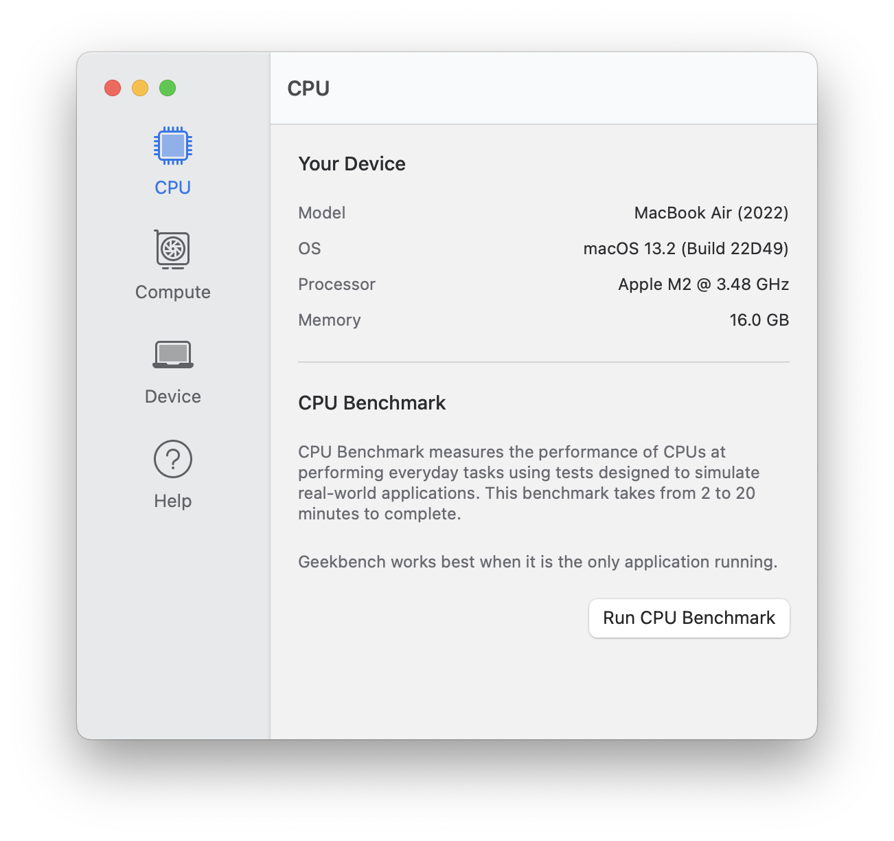

Geekbench 6 新手上手指南：五分钟让你的跑分"说人话"
第一次接触跑分工具？不用担心，这篇从"它到底干嘛的"讲起，带你从零到独立看懂分数、跑出可信结果。
这篇能带你从完全不懂到用起来，不需要任何基础。
它到底是干嘛的？用一个生活化类比讲明白
想象你新买了一辆电动车，店家说"能跑 50 公里"——但你怎么知道这个数字是真实的？Geekbench 就是你给电脑、手机、平板做的那套"续航实测表"，它的官网上每天都有大量真实设备的分数在更新。只不过它测的不是跑多远，而是芯片的算力天花板。
软件会跑一组精心设计的题目——从图片压缩、密码计算到几何渲染，覆盖日常用得到的几乎所有计算场景。每做完一组，就给你一个分数。单核分对应"一个人干活的速度"，多核分对应"所有人一起上的速度"。分数越高，芯片越强，直接做除法就是性能倍数关系：10000 分就是 5000 分的两倍，没有任何模糊地带。
五分钟上手：从安装到第一次跑通的最短路径
第一步，找到安装包。你可以从官网直接下载，Windows 和 macOS 都有对应的安装程序。安卓版去应用商店搜就行，iOS 也能在 App Store 找到。整个安装过程跟装别的软件没什么区别，点几下"下一步"就完事了。
第二步，准备你的设备。这一步新手最容易忽略，直接决定你第一次跑出来的分准不准。
- 笔记本一定要插电，电池模式下处理器会被主动限速；
- 关掉所有后台应用——云盘同步、浏览器标签页、正在下载的东西，一个都别留；
- 确保温度不高：如果是手机，刚打完游戏就等两分钟；如果是笔记本，出风口别被被子挡住；
- 电量保持在一半以上，低电量模式会强制压频率。
第三步，打开软件点"Run"（跑）。就这么简单。整个过程大概两分钟，你啥也不用做，软件自己跑完一组测试。
跑完之后你会看到两个核心数字：单核分和多核分。这就是你的芯片当前的性能快照。

上手后先玩这三个功能
先查自己的机器在哪个梯队
跑完分别急着关，在成绩页往下翻，你会看到同机型的其他人的成绩分布图。看看你的分在什么位置——高于中位数说明你的散热和环境做得不错，低于底部那条线说明有东西在拖后腿（大概率是后台或省电模式）。
这就像查高考分数在全省的排名，光看一个 7500 分没感觉，但知道同机型普遍在 6800 到 8200 之间，你立刻就明白自己跑得行不行。
对比你之前用的旧机器
如果你手头还有一台旧设备（或者之前跑过的成绩截图），试试两台机器的分数直接相除。比如旧手机单核 1800，新手机单核 3600——新手机的单线程性能就是旧手机的整整两倍。
这比厂商宣传的"提升 30%""提升 50%"靠谱多了，因为分数是线性对应的，没有任何套路。
查一查分数为什么偏低
如果你的分明显低于同机型均值，先别急着怀疑硬件。新手遇到这种情况九成是环境问题。软件里内置了排查提示，翻一翻它告诉你的常见原因，实在拿不准就去看geekbench6文档里详细梳理的诊断流程——按顺序检查：后台关干净了吗？省电模式真的关了吗？温度是不是太高？版本是不是对的（6.0 和 6.1 之后的分数不能混比）？
排完这一圈，分数通常就正常了。真要排除了所有环境因素还是偏低，那才值得考虑是不是硬件散热出了问题。

小白的三个常见疑问
手机跑分和电脑跑分能直接比吗？
能，也不能。能比是因为用的是同一套标尺——基线 2500 分对应一台固定的参考机型，所有平台都换算到这一条线上。不能无脑比是因为散热形态差异太大：手机跑两分钟就烫，频率一上来就降；电脑插着电、有风扇吹，可以持续满负载。所以同分数下，手机的"耐力"其实不如电脑。但瞬时算力的对比是完全有效的。
为什么有人的分数比我高好几百？我硬件跟他一样啊
最大的可能是版本号不同。6.1 版本开始，软件把跑分间隙从 2 秒改成了 5 秒（让芯片有时间散点热），新旗舰手机上的单核分最高可比 6.0 版本高出约 5%，多核最高约 10%。查成绩之前先确认版本号，6.0 的老数据和 6.1 之后的新数据要分开看。
跑分到底准不准？会不会作弊？
软件的计分逻辑是全透明的——所有测试题目、算法、分数校准方式在技术文档里都写得清清楚楚。而且成绩需要上传到云端才能保存，服务器端会校验测试过程的完整性，没法动手脚。你跑出来的分，就是当前环境下这台芯片能达到的真实水平。
总结一下：Geekbench 6 不是一个只有发烧友才玩得转的工具，它更像一个给你的设备做体检的小助手。五分钟装完、两分钟跑完，两个数字就能帮你判断"这台机器到底行不行"。
等你熟练之后，可以去翻一翻中文文档里的分数原理部分——那里解释了为什么分数能直接做除法、为什么不同架构能放在同一张表里比，看懂了这些，你就能在各种评测文章里秒懂作者说的"提升 40%"到底意味着什么。不过国内访问偶有不畅，这套参考资料在 GitHub、Gitee 和 GitCode 三个平台都有备份，哪个用着顺手就用哪个。